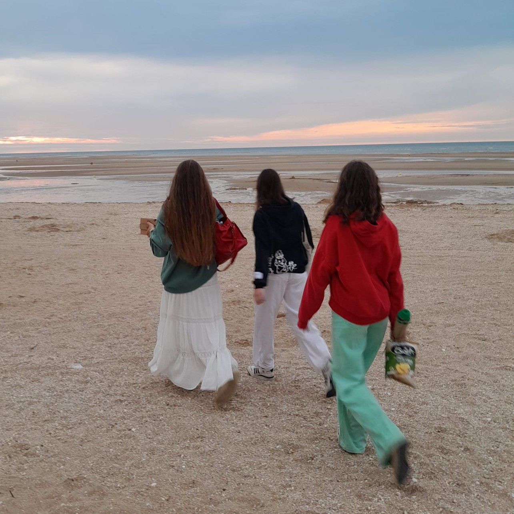

Welcome to my personal profile page 😎

I am a passionate by music !
Check out my favorite website: Click here!
I enjoy listen music, play music, and read some books in my free time.
I have created a few websites for show you my favourite musics and artists
knitting, music and dancing are my main passions.